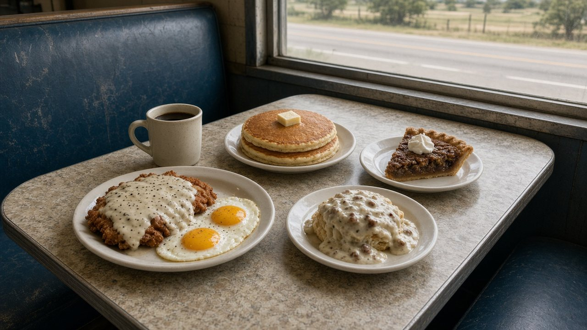

A home-style diner serving breakfast all day, plus burgers, chicken fried steak, meatloaf and pie. Look for the miniature hot air balloon on the roof.

Sample photoEvery day of the week, and breakfast is served all day.
3-egg omelets, pancake & French toast combos, biscuits & gravy
Breakfast sandwiches, breakfast tacos, chicken fried steak & eggs
Including the Cowboy Burger
Chicken fried steak & chicken, Momma's Meatloaf, pork chops, ribeye
Onion rings, fried pickles, salads
Senior and kids combos
All-you-can-eat fish on Fridays. Pies by the slice or whole.
Menu items and services are from third-party menu listings; please confirm they're current.
“great staff friendly people”NEXTDOOR · NOV 2026
“I have breakfast every Saturday morning with a life long friend. … has been our waitress for over nine years ! …”NEXTDOOR · SEP 2026
“Wait staff is Awesome & the whole vibe is Great! Excellent food & never have to wait.”NEXTDOOR · SEP 2026
“The Blue mound Cafe on Blue mound rd has good food and great prices.”NEXTDOOR · SEP 2026
4.5 on Google (about 1,300 reviews) · 77 Nextdoor recommendations
Please confirm the name: Nextdoor shows “Blue Mound Cafe,” and Facebook and Google show “Blue Mound Cafe - Saginaw.”
Please confirm: hours come from directory listings.